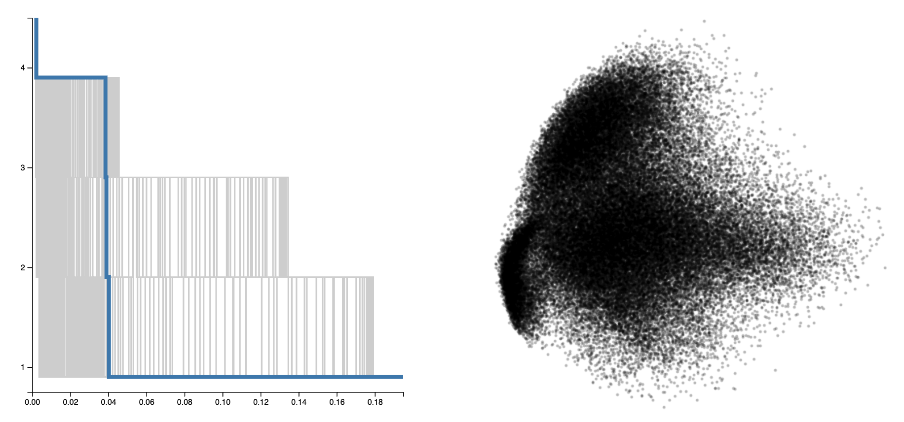
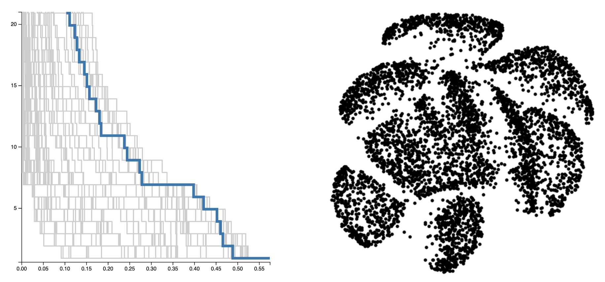
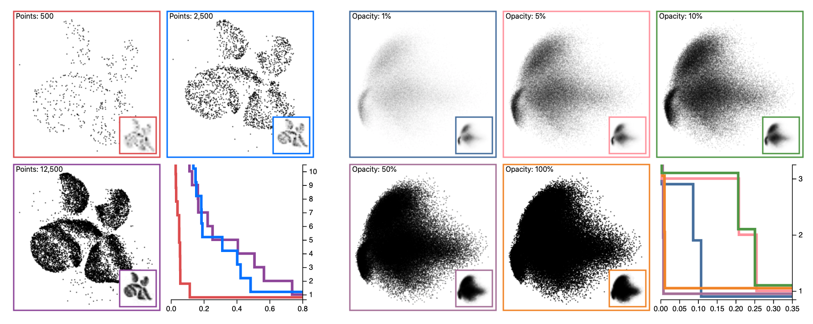
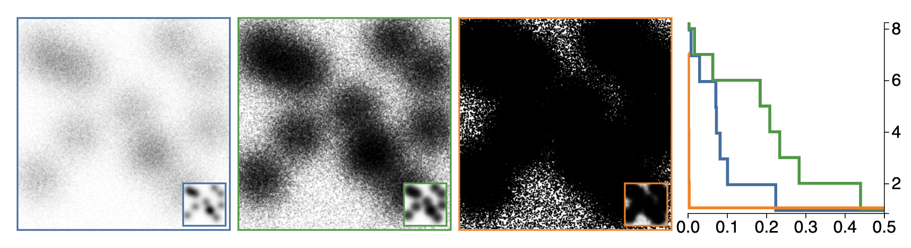

Abstract
Scatterplots are used for a variety of visual analytics tasks, including cluster identification, and the visual encodings used on a scatterplot play a deciding role on the level of visual separation of clusters. For visualization designers, optimizing the visual encodings is crucial to maximizing the clarity of data. This requires accurately modeling human perception of cluster separation, which remains challenging. We present a multi-stage user study focusing on 4 factors---distribution size of clusters, number of points, size of points, and opacity of points---that influence cluster identification in scatterplots. From these parameters, we have constructed 2 models, a distance-based model, and a density-based model, using the merge tree data structure from Topological Data Analysis. Our analysis demonstrates that these factors play an important role in the number of clusters perceived, and it verifies that the distance-based and density-based models can reasonably estimate the number of clusters a user observes. Finally, we demonstrate how these models can be used to optimize visual encodings on real-world data.
Interactive Opacity Demo

Interactive Point Count Demo

Teaser Figure

Overdraw Figure

This work was partially supported by the National Science Foundation (IIS-1845204).